Absolutely one of the most magnificent estates in all of south Florida. Intracoastal point lot with 300' +/- of water frontage. Preeminent quality and fastidious attention to detail are the hallmarks of this superb property. Handcrafted, inlaid marble floors, custom impact mahogany windows and doors. Exquisite chandeliers and frescoes. State of the art security and surveillance system. more details
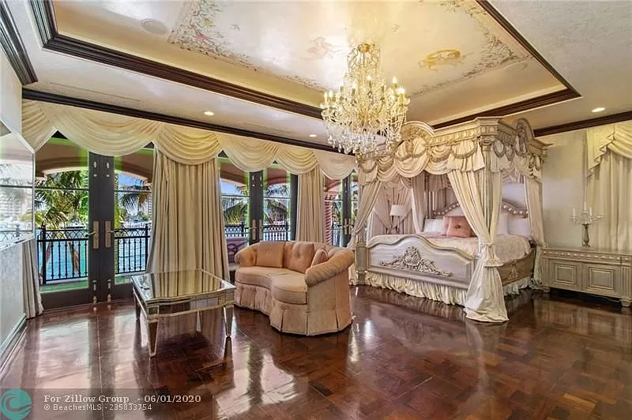 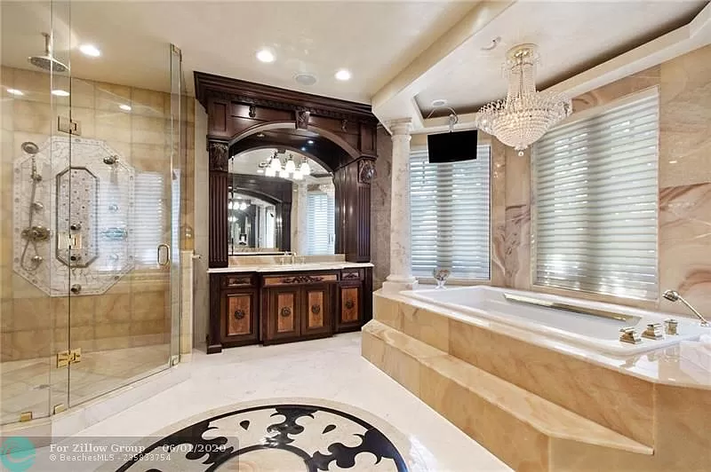 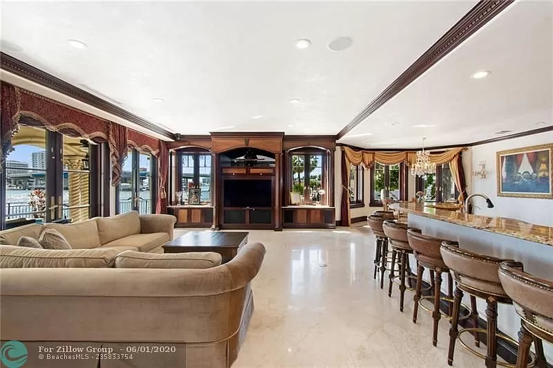 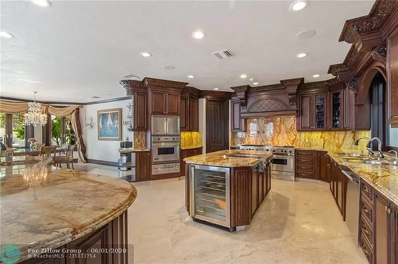Located at the corner of East 69th Street and Madison Avenue in the former Westbury Hotel, this magnificent two-story penthouse offers panoramic views overlooking the New York skyline and Central Park. Smith Architectural Group was commissioned to convert the top two floors of the building into a luxury penthouse reminiscent of those in the classical pre-war buildings of New York. In a herculean effort, the top two floors of the building were removed and rebuilt to allow for the numerous mechanical, electrical, and structural elements. The final result was a 6,241 square foot penthouse which has widely been considered one of New York's finest homes. more details
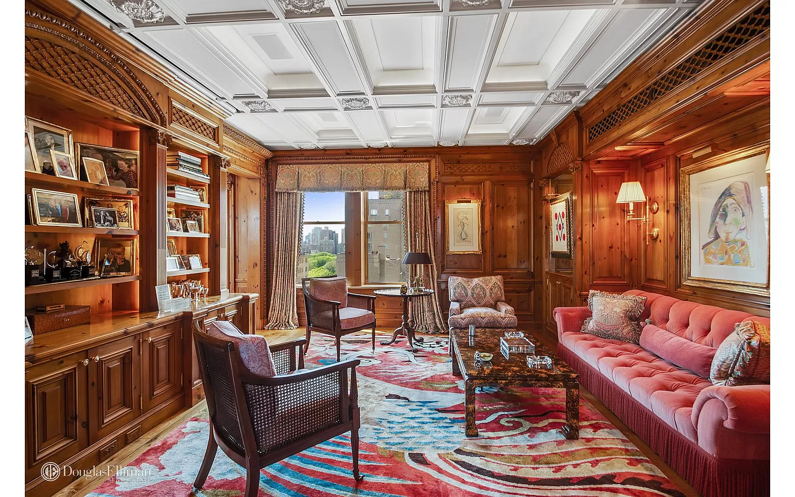 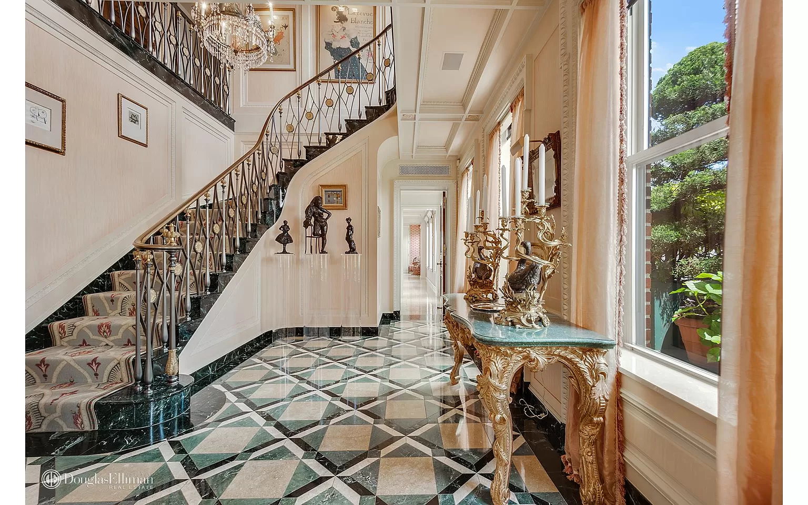 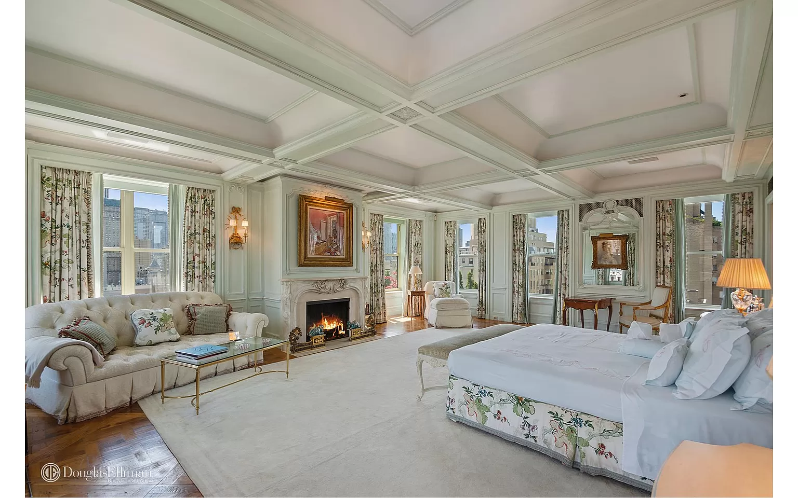The finest quality, substance & style embody this grand Traditional Manor poised on an over 21,000 sq.ft. lot on one of the most prestigious streets in prime Brentwood Park. Set behind majestic double front gates, this world-class estate w/apx. 15,500 sq.ft. of living space is extremely private & offers an enchanting setting w/meticulously manicured grounds, captivating façade & timeless authenticity. This estate provides an exceptional lifestyle w/the quality & amenities equivalent to a superlative five-star hotel. The main level is complete w/impressive formal foyer, formal living rm, library, formal dining rm, family rm & gourmet kitchen w/breakfast rm. 4 family bdrm suites upstairs & the magnificent master suite w/fp, terrace, onyx bath & custom closets/dressing rms. more details
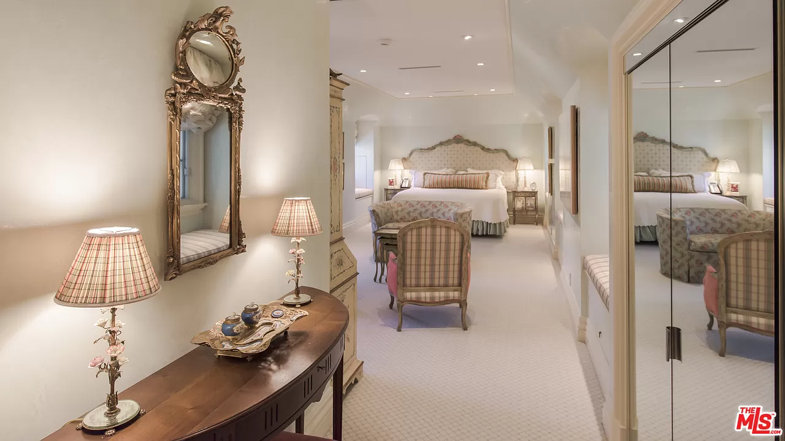 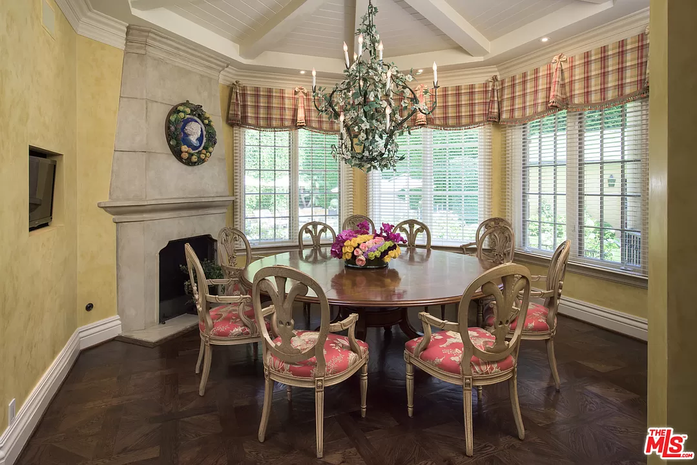 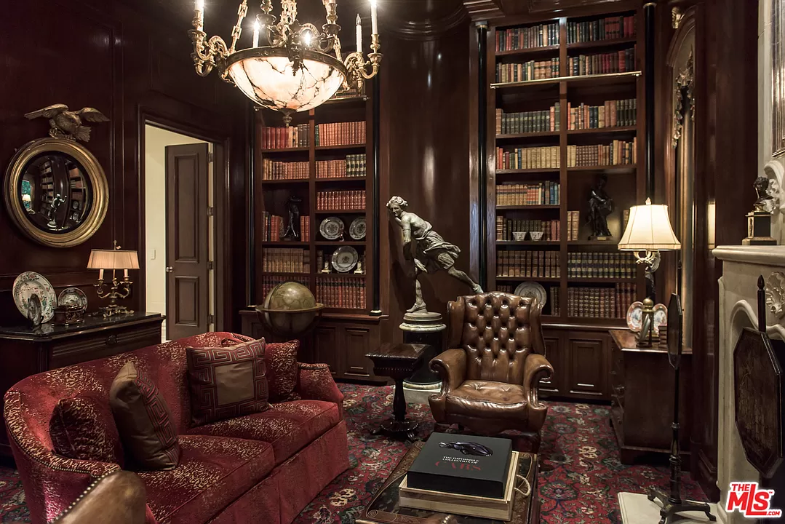 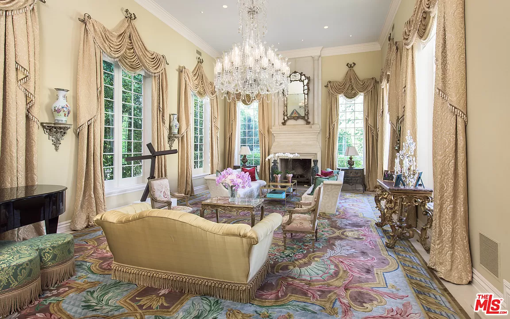They offer the highest level of expertise, service,and integrity.
Jade Mills Estates is the leading real estate agent in Beverly Hills and has helped hundreds of buyers find their dream home in Los Angeles and Beverly Hills, resulting in over $4 Billion of closed residential real estate transactions in the last 20 years.
for more amazing houses visit...
We provide the highest level of sales expertise, exceptional service and experience to the luxury and multi-unit South Bay residential marketplace. Forbes Corrales Coastal Group is the leading real estate team in the South Bay with over 60 years of combined experience and a team well versed in executing complex real estate transactions.
for more amazing houses visit...